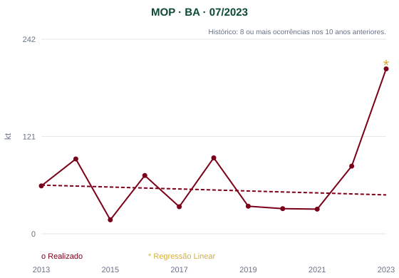
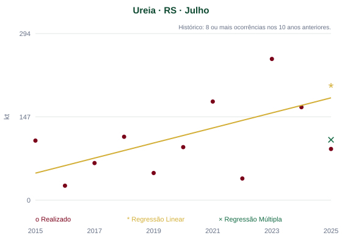

Este é o melhor resultado recente da Regressão Linear. Em alguns casos, o histórico do produto ao longo do tempo é suficiente para produzir uma boa previsão — mas nem sempre é assim.

Este é o melhor resultado recente da Regressão Linear. Em alguns casos, o histórico do produto ao longo do tempo é suficiente para produzir uma boa previsão — mas nem sempre é assim.

Em outros casos, somente o histórico não é suficiente. A consideração de múltiplos fatores pode aproximar a previsão do resultado observado.
